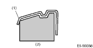
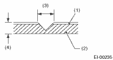
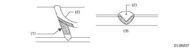

EXTERIOR/INTERIOR TRIM > Front Bumper
1. COATING METHOD FOR PP BUMPER
|
Process No. |
Process name |
Job contents | |
|
1 |
Bumper installation |
Place the bumper on a paint worktable as required. Use the paint worktable conforming to inner shape of bumper if possible. |
 (1) Bumper (2) Set bumper section |
|
2 |
Masking |
Mask specified part (black base) with masking tape. Use masking tape for PP (For example, Nichiban No. 533, etc.). | |
|
3 |
Degreasing/cleaning |
Clean all parts to be painted with white gasoline, normal alcohol, etc. to remove dirt, oil, fat, etc. | |
|
4 |
Primer paint |
Apply primer one to all parts to be painted, using air gun. Use primer (clear). | |
|
5 |
Drying |
Dry at normal temperature [10 to 15 min. at 20°C (68°F)]. In half-dried condition, PP primer paint is dissolved by solvent, e.g. thinner, etc. Therefore, if dust or dirt must be removed, use ordinary alcohol etc. | |
|
6 |
Top coat paint (I) |
Non-colored |
Metallic paint |
|
Use section (block) paint for top coat. • Paint to be used (for each color): Solid paint Hardener PB Thinner T-301 • Mixture ratio: Main agent : Hardener = 4 : 1 • Viscosity: 10 — 13 sec./20°C (68°F) • Film thickness: 35 — 45 µ • Spraying pressure: 245 — 343 kPa (2.5 — 3.5 kg/cm2, 36 — 50 psi) |
Use section (block) paint for top coat. • Paint to be used (for each color): Metallic paint Hardener PB Thinner T-306 • Mixture ratio: Main agent : Hardener = 10 : 1 • Viscosity: 10 — 13 sec./20°C (68°F) • Film thickness: 15 — 20 µ • Spraying pressure: 245 — 343 kPa (2.5 — 3.5 kg/cm2, 36 — 50 psi) | ||
|
7 |
Drying |
Not required. |
Dry at normal temperature [at least 10 min. at 20°C (68°F)]. In half-dried condition, avoid dust, dirt. |
|
8 |
Top coat paint (II) |
Not required. |
Apply a clear coat to parts with top coat paint (I), three times, at 5 — 7 minutes intervals. • Paint to be used: Metallic paint Hardener PB Thinner T-301 • Mixture ratio: Clear coat : Hardener = 6 : 1 • Viscosity: 14 — 16 sec./20°C (68°F) • Film thickness: 25 — 30 µ • Spraying pressure: 245 — 343 kPa (2.5 — 3.5 kg/cm2, 36 — 50 psi) |
|
9 |
Drying |
60°C (140°F), 60 min. or 80°C (176°F), 30 min. If higher than 80°C (176°F), PP may become be deformed. Keep maximum temperature of 80°C (176°F). | |
|
10 |
Inspection |
Check paint. | |
|
11 |
Removal of masking |
Remove the masking tape applied in procedure 2. | |
2. REPAIR INSTRUCTIONS FOR COLORED PP BUMPER
NOTE:
All PP bumpers are provided with a grained surface, and if the surface is damaged, it cannot normally be restored to its former condition. Damages limited to the shallow scratches that cause only a change in the luster of the base material or coating, can be almost fully restored. Before repairing a damaged area, explain this point to the customer and obtain an understanding about the matter. Repair methods are outlined below, based on a classification of the extent of damage.
1. Minor damage causing only a change in the luster of the bumper due to a light touch
Almost restorable.
|
Process No. |
Process name |
Job contents | |
|
1 |
Cleaning |
Clean the area to be repaired using water. | |
|
2 |
Sanding |
Grind the repairing area with #500 sand paper in a “feathering” motion. | |
|
3 |
Finish |
Resin section |
Coated section |
|
Repeatedly apply wax to the affected area using soft cloth (such as flannel). Recommended wax: NITTO KASEI Soft 99 TIRE WAX BLACK, or equivalent. |
Perform either the same process as for the resin section or process No. 18 and subsequent in the 3) section, depending on the degree and nature of damage. | ||
|
Polish the waxed area with clean cloth after 5 — 10 minutes. | |||
2. Deep damage caused by scratching with fences etc.
A dent cannot be repaired but a whitened or swelled part can be removed.
|
Process No. |
Process name |
Job contents | |
|
1 |
Cleaning |
Clean the damaged area with water. | |
|
2 |
Removal of damaged area |
Cut off protruding area, if any, due to collision, using a putty knife. | |
|
3 |
Sanding |
Grind the affected area with #100 — #500 sand paper. | |
|
4 |
Finish |
Resin section |
Coated section |
|
Same as step 3 in the “1)” section. |
Perform step 12 and subsequent operations in the “3)” section. | ||
3. Deep damage such as a break or hole that requires filling
Much of the peripheral grained surface must be sacrificed for repair. The degree of restoration is not really worth the expense. (The surface, however, will become almost flush with adjacent areas.)
Recommended repair kit: PP Part Repair Kit (NRM)
|
Process No. |
Process name |
Job contents | |
|
1 |
Bumper removal |
Remove the bumper as required. | |
|
2 |
Removal of parts |
Remove the parts built into bumper as required. | |
|
3 |
Bumper placement |
Place the bumper on a paint worktable as required. It is recommended to use the paint worktable conforming to internal shape of bumper. |
(1) Bumper (2) Set bumper section |
|
4 |
Surface preparation |
Remove dust, oil, etc. from areas to be repaired and surrounding areas, using a suitable solvent (NRM No. 900 Precleno, white gasoline, or alcohol, etc.). | |
|
5 |
Cutting |
If the damage is a crack or a hole, cut a guide slit of 20 to 30 mm (0.79 to 1.18 in) in length along the crack or hole up to the bumper base surface. Next, use a knife or grinder to carve a V-shaped groove in the area for repair. |
 (1) Paint surface (2) PP base surface (3) 20 — 30 mm (0.79 — 1.18 in) (4) 3 mm (0.12 in) |
|
6 |
Sanding (I) |
Grind beveled surface with sand paper (#40 — #60) to smooth finish. | |
|
7 |
Cleaning |
Clean the sanded surface with the same solvent as used in Procedure 4. | |
|
8 |
Temporary welding |
Grind the side just opposite the beveled area with sand paper (#40 — #60) and clean using a solvent. Temporarily spot-weld the side, using PP welding rod and heater gun. | |
|
(1) Welded point (Use heater gun and PP welding rod) (2) PP base surface (3) Beveled section NOTE: • Do not melt welding rod until it flows out. This results in reduced strength. • Leave the welded spot unattended until it cools completely. | |||
|
9 |
Welding |
Using a heater gun and PP welding rod, weld the beveled spot while melting both the rod and damaged area. | |
|
 (1) Melt hatched area (2) Welding rod (3) Section NOTE: • Melt the sections indicated by hatched area. • Do not melt the welding rod until it flows out, in order to provide strength. • Always keep the heater gun 1 to 2 cm (0.4 to 0.8 in) away from the welding spot. • Leave the welded spot unattended until it cools completely. | |||
|
10 |
Sanding (II) |
Remove excess part of weld with a putty knife. If a drill or disc wheel is used instead of the knife, operate it at a rate lower than 1,500 rpm and grind the excess part little by little. A higher rpm will cause the PP substrate to melt from the heat. | |
|
| |||
|
Sand the welded spot smooth with #240 sand paper. | |||
|
11 |
Masking |
Mask the black substrate section using masking tape. Recommended masking tape: Nichiban No. 533 or equivalent | |
|
12 |
Cleaning/degreasing |
Completely clean the entire coated area, using solvent similar to that used in Procedure 4. | |
|
13 |
Primer coating |
Apply a coat of primer to the repaired surface and its surrounding areas. Mask these areas, if necessary. Recommended primer: Mp/ 364 PP Primer NOTE: Be sure to apply a coat of primer using a spray gun at a pressure of 245 — 343 kPa (2.5 — 3.5 kg/cm2, 36 — 50 psi). | |
|
14 |
Leave unattended |
Leave the repaired area unattended at 20°C (68°F) for 10 to 15 minutes until primer is half-dry. NOTE: If dirt or dust comes in contact with the coated area, wipe it off with a cloth dampened with alcohol. (Do not use thinner since the coated area tends to melt.) | |
|
15 |
Primer surfacer coating |
Apply primer surfacer to the repaired area two or three times at an interval of 3 — 5 minutes. Recommended surfacer: • UPS 300 Flex Primer • No. 303 UPS 300 Exclusive hardener • NPS 725 Exclusive Reducer (thinner) • Mixture ratio: 2 : 1 (UPS 300 : No. 303) • Viscosity: 12 — 14 sec./20°C (68°F) • Coating film thickness: 40 — 50 µ | |
|
16 |
Drying |
Allow the coated surface to dry for 20 minutes at 20°C (68°F) [or 30 minutes at 60°C (140°F)]. | |
|
17 |
Sanding (III) |
Sand the coated surface and its surrounding areas using #400 sand paper and water. | |
|
18 |
Cleaning/degreasing |
Same as Process No. 12. | |
|
19 |
Top coat (I) |
Non-colored |
Metallic paint |
|
Use a “block” coating method. • Recommended paint: Suncryl (SC) No. 307 Flex Hardener SC Reducer (thinner) • Mixture ratio: 3 : 1 Suncryl (SC) : No. 307 Flex Hardener • Viscosity: 11 — 13 sec./20°C (68°F) • Coating film thickness: 40 — 50 µ • Spraying thickness: 245 — 343 kPa (2.5 — 3.5 kg/cm2, 36 — 50 psi) |
Use a “block” coating method. • Recommended paint: Suncryl (SC) No. 307 Flex Hardener SC Reducer (thinner) • Mixture ratio: 3 : 1 Suncryl (SC) : No. 307 Flex Hardener • Viscosity: 11 — 13 sec./20°C (68°F) • Coating film thickness: 20 — 30 µ • Spraying thickness: 245 — 343 kPa (2.5 — 3.5 kg/cm2, 36 — 50 psi) | ||
|
20 |
Leave unattended |
Not required. |
Leave unattended at 20°C (68°F) for at least 10 minutes until the topcoated area is half-dry. NOTE: Be careful to keep dust or dirt from coming in contact with the affected area. |
|
21 |
Top coat (II) |
Not required. |
Apply a clear coat three times at an interval of 3 to 5 minutes. • Recommended paint: SC710 Overlay Clear No. 307 Flex Hardener SC Reducer (thinner) • Mixture ratio: 3 : 1 Suncryl (SC) : No. 307 Flex Hardener • Viscosity: 10 — 13 sec./20°C (68°F) • Coating film thickness: 20 — 30 µ • Spraying pressure: 245 — 343 kPa (2.5 — 3.5 kg/cm2, 36 — 50 psi) |
|
22 |
Drying |
Allow the coated surface to dry for two hours at 20°C (68°F) or 30 minutes at 60°C (140°F)]. NOTE: Do not allow the temperature to exceed 80°C (176°F) since this will deform the PP substrate. | |
|
23 |
Inspection |
Carefully check the condition of the repaired area. | |
|
24 |
Removal of masking |
Remove the masking tape applied in Process No. 11 and 13. | |
|
25 |
Parts installation |
Install parts on the bumper in reverse order of removal. | |
|
26 |
Bumper installation |
Install the bumper. | |